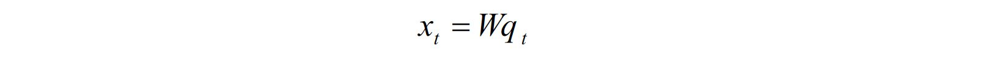

Method
In the Visual Question Answering, we formulate it as a classification problem. Each answer is assigned a class label. The VQA system is to predict the class label. So we first extract the image features and question representation, then fuse them to be a Visual Question representation. The Visual Question representation is forwarded to a classifier for answering prediction.
Visual Representation:
The image model uses a CNN to get the representation of images. The VGGNet[1] is used to extract the image feature map f from a raw image I. The following figure illustrates the network structure we used. The training and testing images are scaled to be 224*224. Given one image of size 224*224, the VGG network will output a feature map of size 512*7*7 where 512 is the number of channels and 7*7 are the spatial height and width of the feature map.
The Network structure of VGG network
Question Representation:
In the existing work, CNN and LSTM have been proved to be powerful tool to capture the semantic meaning of the sentence. Therefore, we adopt them for the Question representation. First, we learn a word embedding for word representation. In the embedding, each word is represented as one hot vector, then the words could be embbeded into a vector space by embedding matrix:
Where W is the embedding matrix, and q is the hot vector for the word and x is the representation of the word.
After obtaining the representation of each word, we use LSTM to extract the question representation. The following figure illustrates the process.
The essential structure of a LSTM unit is a memory cell ct which reserves the state of a sequence. At each step, the LSTM unit takes one input vector (word vector) xt and updates the memory cell ct, then output a hidden state ht. The update process uses the gate mechanism. A forget gate ft controls how much information from past state ct-1 is preserved. An input gate it controls how much the current input xt updates the memory cell. An output gate ot controls how much information of the memory is fed to the output as hidden state. The detailed update process is as follows:
For more details, please refer this tutorial http://colah.github.io/posts/2015-08-Understanding-LSTMs/
Visual Question Representation
First method. We try a simple and naive idea to fuse them. That is direct concatenation. In the direct concatenation, the image feature of size 512*7*7 are forwarded through a spatial pooling to obtain a vector of size 512. The question representation is 512. Then they are concatenated together to obtain a visual question representation with size 1024. Finally, the visual question representation is forwarded though fully connected layer for classification.
Second method. As we know, the visual question answer is usually relevant to region of the image based on the question instead of the whole image. Therefore, obtaining a attended visual feature representation based on the question is important. We follow a recent paper[2] to implement a stacked attention network to fuse the visual and question representation. The following figure illustrates the process.
Given the image feature matrix vI and the question vector u, they are forwarded through a single layer neural network and then a softmax function to generate the attention distribution over the regions of the image:
Then the aggregated image feature vector is added to the previous query vector to form a new query vector:
After obtaining the new question vector, this process could be repeated for several times. In our implementation, this is repeated twice. Then the fused representation is ten forwarded to a classifier for answering prediction.